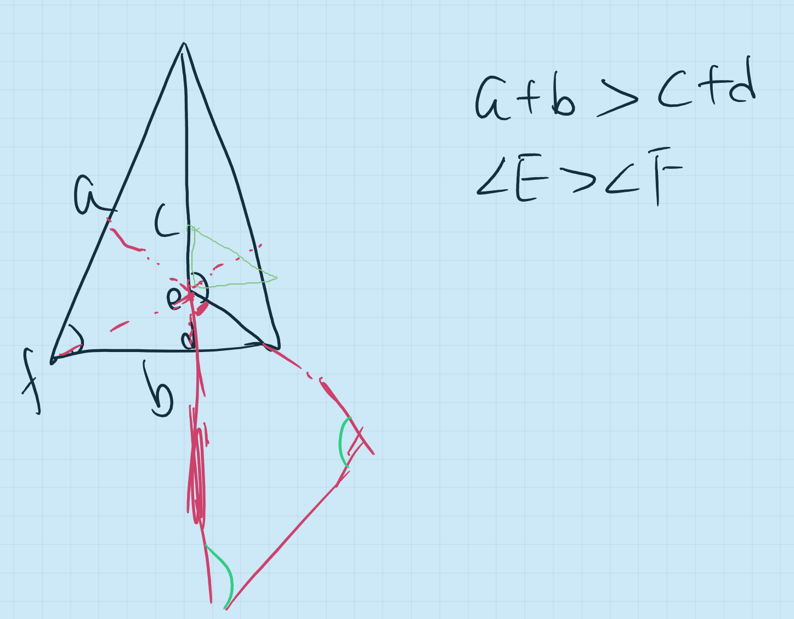

Chapter 12 第十一课（命题二十一）
12.1 命题二十一
如果在三角形的一边，从其端点，构建两条直线使相交于三角形内，这两条直线比三角形剩余的两边短，但夹角更大。
学习欧几里得的证明题有不同的方式，最常见的有两种：一种是以阅读的方式顺着欧几里得的思路读下来，最好在阅读完毕之后能合上书自己再推演一遍；而另外一种方式则是只读命题，按照需求可以参考图片，然后想办法自己推演，看是否能有已知推出结论。
今天的命题二十一是一次高难度的挑战，一是我们尝试用英语上课，而是我们选择了第二种方法，希望能够推出欧几里得的证明。在自己亲自验证的过程中，希望Alex能明白，创造与跟随的区别以及创造时的助力(辅助线)。
如果我们阅读《几何原本》，总是感觉证明题并不难，逻辑非常的顺畅，然而只有我们在试图自行证明的时候，才发现逻辑的顺畅并不意味着线索的显而易见。我是指，信息就如同碎片一般，哪怕我们确定最后能组装成一个漂亮的拼贴画，拼贴画的轮廓和线条却不是那么容易就确定的。今天我和Alex一个小时的课就只在研究这一道证明题。
这道证明题的关键有两个：一个是辅助线，另一个是明确要引用的定理。
我们先来看题意：“如果在三角形的一边，从其端点，构建两条直线使相交于三角形内，这两条直线比三角形剩余的两边短，但夹角更大。”
这里需要比较两组不同的目标，一组是两条边之和，另一组是两个夹角。比较边和角分别要用到不同的定理，而前二十个命题比较边和夹角的定理并不多，尤其是上一个命题-命题二十-谈论的就是三角形两边之和大于第三边，很大可能性就会在此用到。之前命题关于角的大小则有对顶角、外角和三角形内角等比较，关于直角的命题可以暂时放在一边，因为一旦是直角，三角形就有了限制，而这道命题的陈述明显是针对一般三角形的。
将可以选择的命题放在一边，接下来就是辅助线的问题。我们一直都在强调选择辅助线的技巧，最核心的一点就是理解辅助线的作用。辅助线，顾名思义，是帮助完成命题的，而这个帮助就是一种桥梁的作用，换言之，辅助线就是一个媒介，帮我们从已知走向所求的证明。如果并不能很快的找到从已知到所求的桥梁，我们可以从不同的尝试开始，也就是我和Alex说，随便画，把你能想到的所有可能的辅助线都画出来，然后我们来对比分析它们在这个证明里的实用性。
Alex作图如下：(红色是辅助线) 
最后的辅助线起的一定是媒介作用，而媒介也就是过渡的意思，因为大多数的辅助线是尽可能的补充原有的图像，而不是进行重大的更新，换一句话说，辅助线往往是有限度的拓展。Alex的辅助线的思路在此就是跳跃太多，产生了很多新的线和角，都已经延伸到三角形之外了。其实红色的线已经包含了我们所期望的辅助线，然而也是因为太过细微，所以被忽略。学数学，思路开阔和细节到位两样都不可或缺。
这个时候就是需要追问：这条辅助线与什么命题/定理/性质联系在一起，可以被运用呢？如果没有答案的话，我们要排除掉这个辅助线，在这个过程中逐渐认识到辅助线“媒介”的特质。
当我们能够将辅助线和前面的命题相联系的时候，证明题的架构也就会变清晰了。这道题的辅助线是构建一个中间三角形，然后将角和边的对比从最里面的新三角形过渡到外面的三角形。相对于边的比较，角的比较相对简单，加了辅助线之后的角，对里面的小三角形是外角，而相对于外面的三角形则是外角，这种双重身份帮助实现了过渡的作用。边的比较看起来复杂，其实也是任意两边之和大于第三边与不等式加法相结合的运用，只不过中间的媒介在运用的时候绕了一个弯。
今天通过详细的学习命题二十一，希望Alex能够更好的理解辅助线的添加和运用。
参考作业：
- 从最近的数学作业里挑5-10道用到辅助线的几何证明题，分析辅助线是怎么画的，然后辅助线是如何发挥过渡作用的。